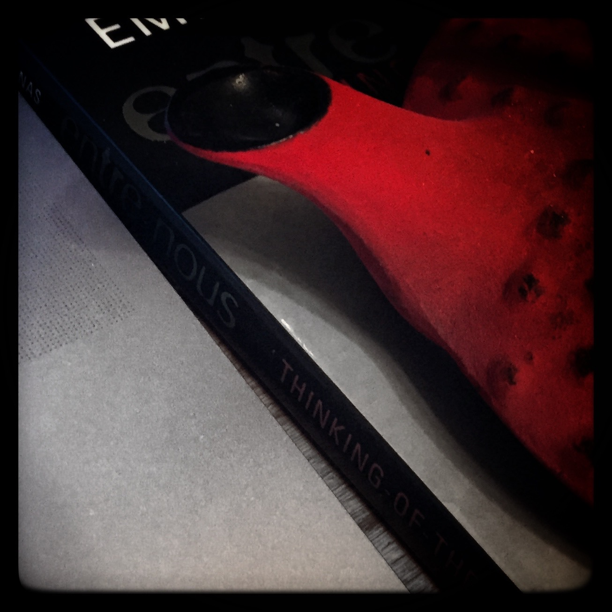

News
Supreme Court Justice Antonin Scalia died , and President Obama has vowed to nominate a replacement within the next few weeks.
Senate Republicans have already voiced opposition, claiming that the nomination should wait until the American people have had a chance to cast their votes in the next election.
Democrats argue that going a year with a vacant Supreme Court seat is unprecedented in recent history,
and that for Republicans to refuse a nomination without first considering their merits is a shameful abdication of one of the Senate’s most essential Constitutional responsibilities.
In other news, Bill Clinton would like to remind us that Obama isn't actually black.
Culture
Earlier this month, videogame critic Leigh Alexander announced her departure from the field in an incredibly uplifting and optimistic post on her personal blog. Along with Laura Hudson, Leigh has spent the past year editing Offworld, an #altgames offshoot of BoingBoing, and the duo are currently kickstarting a hardcover edition to commemorate its one-year anniversary.
Ima fix wolves
— KANYE WEST (@kanyewest) February 14, 2016
On , Kanye West released his seventh solo studio album, The Life of Pablo, for exclusive streaming on the music service TIDAL. The album was planned for release on , but the release was delayed by Chance the Rapper, who demanded the track Waves make it onto the final release. The album should be made available on other platforms soon, after Kanye fixes Wolves.
Local
The 2016 Power and Privilege Symposium is ! Sponsored by the Associated Students of Whitman College (and many others), the Symposium aims to provide members of the Whitman community with a safe space in which to analyse issues of marginalization, privilege, and inequality. This year's theme is “Speak Up, Act Out”, and the schedule for the event is now available on the Power and Privilege website.
I'll be on two panels (A isn't for Ally: Life on the Aro/Ace Spectrum and Concrete Change: Challenging Cissexism at Whitman), and will try to tweet relevant moments on my twitter under the hashtags #speakupactout and #WhitmanPPS.
Opinion
North American universities and colleges… have traditionally hired faculty with almost zero consideration for how those faculty will engage with students from underrepresented and marginalized communities. This is a dangerous hiring practice that directly harms the life opportunities and the health of marginalized students.
It's a little confrontational,Okay, very confrontational. but Chanda Prescod-Weinstein published a piece on Medium about racism on college campuses, and it's a pretty good read. She points out that racism on campus actively damages students' health, which seems like kinda not what a college should be going for.
There was a bit of a kerfuffle in #altgames circles recently surrounding a piece published in Offworld, the specifics of which aren't really important. But Ian Danskin managed to use the incident as a launching point for an interrigation into the dynamics between calling-out and calling-in as a means of resolving conflict, especially within communities where publicity is often seen as an invitation for targeting by harrassment groups. Ian is a media and culture critic who I greatly respect, so if you haven't read his thoughts or watched his videos, you should definitely check them out.
A piece made the rounds on my Facebook feed a few days ago which suggested that separating sex and gender might actually be transphobic. I agree with the intent of the piece, but felt like it maybe went a bit far,Something Sara Ahmed says in the Afterword to the second edition of The Cultural Politics of Emotion is that affect and emotion are a little like the whites and yolk of an egg: Sometimes it is useful (and necessary) to separate the two, and other times you just want scrambled eggs. I feel similarly about sex and gender. so I responded with my thoughts on the matter.
Last week, on Whitman College's student newspaper, The Pioneer, Jose Guerrero Coronado published a piece on the Central American immigration crisis, and why it hasn't been getting as much media attention as the refugee crisis in Europe.
The question at hand is not how many refugees the United States, Mexico or Canada can take—it’s why are these people leaving their homelands?
This week's mix
So I started reading Terrorist Assemblages, by Jasbir Puar, and then I got distracted and made this mix. It's kinda weird, because theory is kinda weird. Give it a spin.
|
theorijams music for reading theory. 09 Feb 2016 yo. |
|
|---|---|

|
01 Cinemetropolis | Blue Scholars |
| 02 Fall in Love | Phantogram | |
| 03 Vultures | Vaults | |
| 04 Red | Phoria | |
| 05 Windows | Prinze George | |
| 06 Caelum | Oskar Schuster & Cypix | |
| 07 Freaky Eyes | Oneohtrix Point Never | |
| 08 Letter Never Sent ft. Trent Dabbs | Young Summer | |
| 09 Sunset on Low | Marble Sky | |
| 10 Turn to Dust | Wolf Alice | |
| 11 Snowing in Berlin | Mikael Delta | |
| 12 Girl | Jamie xx | |
| 13 Maybe | Alina Baraz & Galimatias | |
| 14 Flower Dance | DJ OKAWARI | |
| 15 N.O.X. | KesakoO & Screenatorium | |